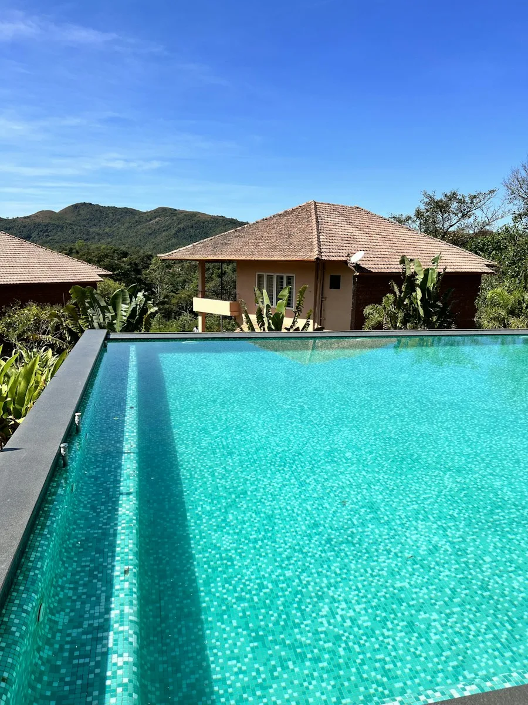
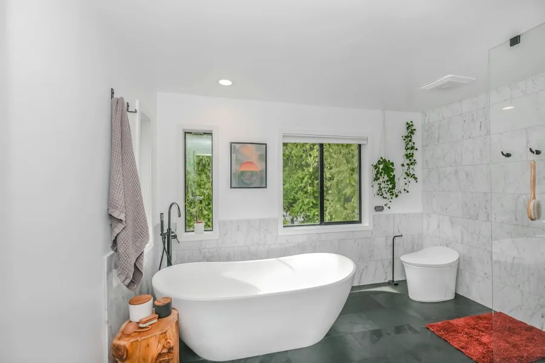
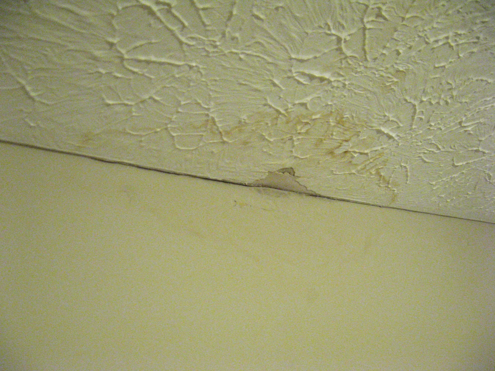
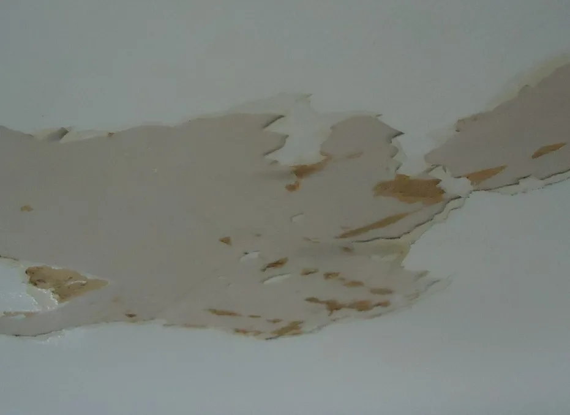
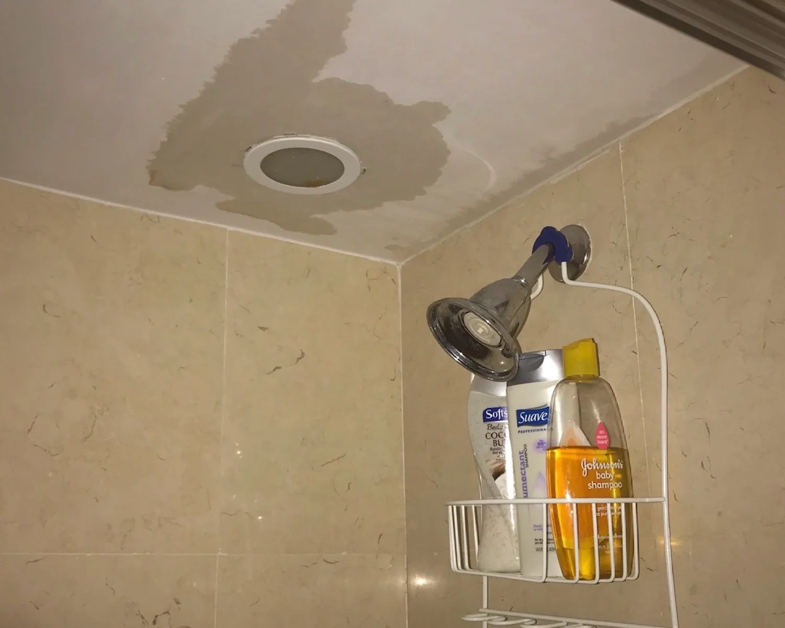
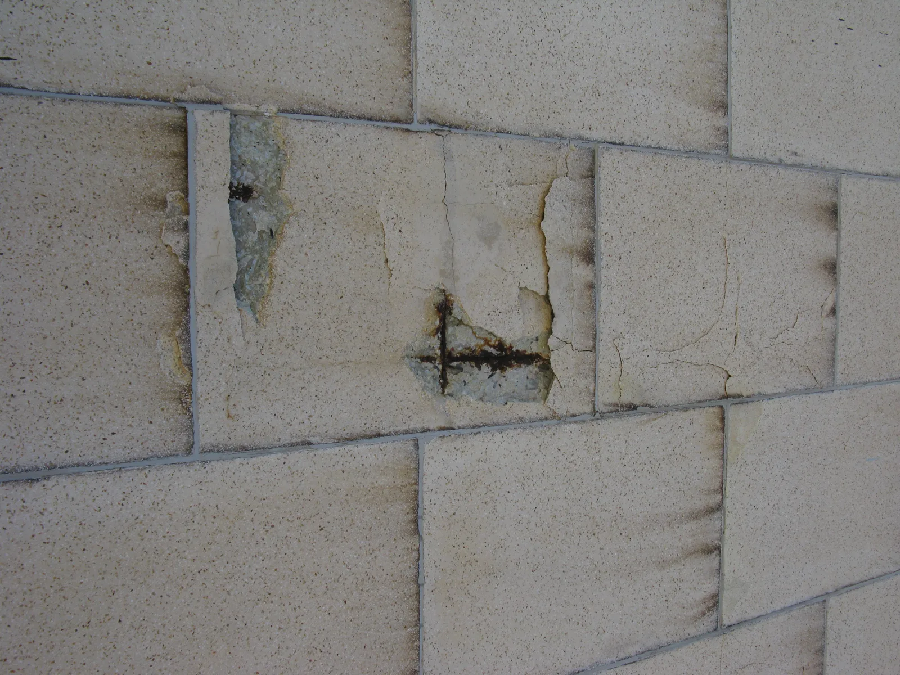

For New Construction
Plan waterproofing at the relevant construction stages, including foundation lean concrete, retaining walls, joints, DPC and wet areas.
Roof leakage, basement seepage or damp washroom walls? Infinite Building Solutions provides waterproofing for homes, commercial buildings and industrial properties across Karachi.
We assess the affected area and recommend a system suited to the surface, water exposure and stage of construction.
Infinite Building Solutions — Strength You Can Trust.
A ceiling stain, damp wall or leaking tank can have different causes. Before recommending treatment, IBS checks the affected surface, joints, cracks, drainage and existing waterproofing.
Our services cover both new construction and existing buildings. Depending on the application, we use PU polyurethane elastomeric membranes, crystalline systems, cementitious coatings and supporting treatments specified for the work.
Exposed roofs need careful attention around slab cracks, parapet junctions, pipe penetrations and rainwater outlets. Weak details or damaged waterproofing can allow rainwater to reach the ceiling below.
IBS uses a PU polyurethane elastomeric membrane system for top-roof waterproofing, subject to surface assessment and the selected product's application requirements.
Preparation and detail treatment form part of the recommended scope before membrane application.
IBS also provides waterproofing for pre-engineered building (PEB) sheds, steel sheds and metal roof structures. We assess leakage around sheet overlaps, fasteners, roof joints, flashing and gutter connections before recommending treatment.
The waterproofing approach is selected according to the metal surface, existing coating and roof condition. Preparation and treatment must account for product compatibility and movement at joints.
Foundation and basement waterproofing should account for the concrete condition, water exposure and access available for treatment. IBS provides different systems for foundation lean concrete, external retaining walls and internal basement surfaces.
System: Crystalline Waterproofing
Crystalline waterproofing is specified for foundation lean concrete in the IBS treatment schedule. The application stage and preparation requirements are reviewed before work begins.
System: PU Polyurethane Elastomeric Membrane
IBS specifies a PU elastomeric membrane for the external face of basement retaining walls. Access and coordination with the construction sequence are important when planning this work.
System: Crystalline Waterproofing
Crystalline treatment is specified for internal basement walls and floors. Existing seepage, joints and concrete defects are assessed to determine the preparation and any additional treatment required.
System: Swell Bar
Swell bars are specified at retaining-wall joints. Their location and installation should be coordinated with the joint design and concrete work.
Water-retaining structures require attention to walls, floors, joints and pipe connections. IBS selects the treatment according to the structure, access and intended use.

For drinking-water tanks, the selected product must be suitable for potable-water contact, with its curing and commissioning instructions followed before use.
System: Cementitious Coating
Cementitious coating is specified for internal and external underground-tank waterproofing. Surface defects, joints and pipe penetrations are reviewed before application.
System: Cementitious Coating
IBS specifies cementitious coating for overhead water tanks. The tank's condition and access are assessed before recommending preparation and treatment.
System: Crystalline Waterproofing & Cementitious Coating
The IBS treatment schedule specifies both crystalline waterproofing and cementitious coating for swimming pools. Application must be coordinated with joints, fittings and the proposed pool finish.
System: Crystalline Waterproofing
Crystalline waterproofing is specified for sump pits, with particular attention to the concrete condition, wall-to-floor junctions and service penetrations.
Waterproofing also needs to address smaller areas where moisture can enter adjoining walls, floors or rooms below.
System: Cementitious Coating
IBS specifies cementitious coating for washrooms. Treatment planning includes the floor, relevant wall areas, corners, drain connections and pipe penetrations before the final finish is installed.
System: PU & Fibreglass Coating
PU and fibreglass coating is specified for DPC waterproofing. Application is coordinated with the construction detail and the condition of the receiving surface.

The following schedule outlines IBS's specified treatments. Final product selection and application details depend on the site assessment.
| Application Area | Specified System |
|---|---|
| Concrete, where required | Waterproofing admixture |
| Supporting treatment, where required | SBR |
| Foundation lean concrete | Crystalline system |
| External basement retaining walls | PU polyurethane elastomeric membrane |
| Internal basement walls and floors | Crystalline system |
| Underground water tanks, internal and external | Cementitious coating |
| Swimming pools | Crystalline system and cementitious coating |
| Sump pits | Crystalline system |
| Retaining-wall joints | Swell bar |
| DPC | PU and fibreglass coating |
| Washrooms | Cementitious coating |
| Overhead water tanks | Cementitious coating |
| Top roofs | PU polyurethane elastomeric membrane |
Admixtures and SBR are used where the project specification requires them. Their role and application are confirmed as part of the recommended scope.

Brown marks or damp ceiling patches after rainfall may indicate water entry through the roof or adjoining details.
Photo: Ed! / Wikimedia Commons · CC BY-SA 3.0 · Display cropped.

Moisture beneath a finish can cause paint to lift or peel. Identify the source before repainting.
Photo: Tomwsulcer / Wikimedia Commons · CC0 · Display cropped.
Recurring moisture around basement surfaces and joints needs assessment before choosing a treatment.

Wet adjoining walls, damp ceilings below bathrooms or visible tank leakage are reasons to arrange an inspection.

Cracks, loose coatings and deteriorated surfaces may need repair before a new waterproofing system is applied.
Photo: JonRichfield / Wikimedia Commons · CC BY-SA 3.0 · Display cropped.
We review the affected surfaces, visible leakage, joints, cracks and possible sources of water entry.
We explain the proposed treatment, preparation requirements and scope based on the application area and site conditions.
The surface is prepared, relevant defects are treated and the selected system is applied according to its requirements.
We review the treatment and explain the relevant curing, protection and maintenance guidance. Any testing included in the scope is coordinated at the appropriate stage.
We recommend treatments according to the application, from exposed roofs to basement walls and water tanks.
Surface condition, joints and penetrations are considered when defining the work.
Our scope covers waterproofing during new construction and treatment of existing leakage problems.
We explain the recommended system and work required so you can understand the quotation.
Waterproofing costs depend on the area, surface condition, access and selected system. A roof membrane and an internal tank coating involve different preparation and application requirements.
Book a free site inspection in Karachi so IBS can assess the work and provide a quotation.
IBS provides waterproofing services across Karachi, including DHA, Clifton, Gulshan-e-Iqbal, North Nazimabad, Malir and Gulshan-e-Maymar.
Share your location, the affected area and when the leakage occurs to help our team arrange an inspection.
The suitable system depends on the application area, surface condition, water exposure and construction stage. IBS's treatment schedule includes PU membranes for top roofs and external retaining walls, crystalline systems for specified concrete areas, and cementitious coatings for tanks and washrooms. An inspection helps confirm the appropriate scope.
An existing roof can be assessed for treatment. We inspect the current surface, cracks, joints, drainage and previous waterproofing before recommending preparation and a suitable system. Some areas may require repair or removal of damaged material before application.
Yes. IBS specifies a PU polyurethane elastomeric membrane for external basement retaining walls and crystalline waterproofing for internal basement walls and floors. Access, concrete condition and the source of seepage help determine the work required.
Yes. IBS specifies cementitious coatings for underground and overhead water tanks. Underground-tank treatment can include internal and external surfaces. For drinking-water storage, the selected product must be suitable for potable-water contact and used according to its instructions.
Yes. IBS specifies cementitious coating for washroom waterproofing. The treatment should be planned around floor levels, corners, drains, pipe penetrations and the proposed finish. The inspection and construction stage help determine the required scope.
Service life depends on the selected product, preparation, application, exposure and maintenance. Drainage and later damage can also affect performance. IBS can explain the relevant care requirements after recommending a system for your property.
Application depends on the selected product's surface-moisture, weather and curing requirements. Rain can affect preparation or application, so scheduling must suit the system. Contact IBS to assess the leakage and discuss an appropriate treatment window.
Yes. IBS offers a free site inspection in Karachi to assess the affected area and discuss the recommended waterproofing work. Contact our team with your location to arrange a visit.
Whether you are planning foundation waterproofing or dealing with roof leakage, basement seepage or a leaking tank, IBS can assess the area and recommend a suitable treatment.
Office No.02, SB-44, Sector X-4, Gulshan-e-Maymar, Karachi, Pakistan
Photographs are illustrative and do not show IBS projects.